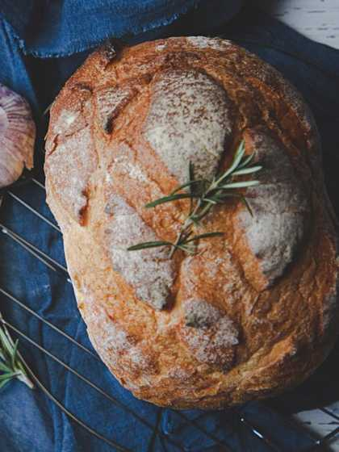
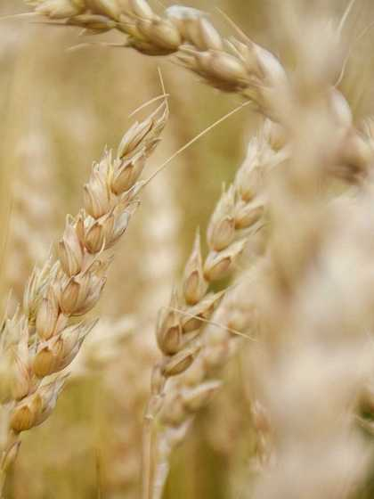
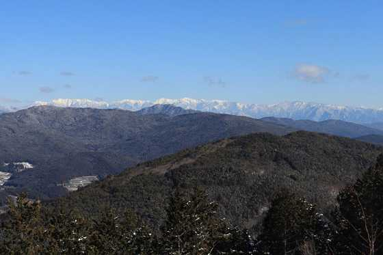
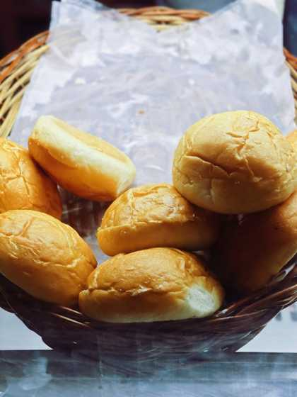
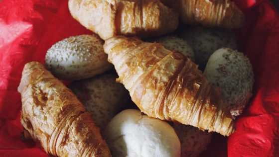

GUNROKU / KISO AGEMATSU
山あいの町で、季節の果実とハーブから起こした酵母のパンを。
長野県木曽郡上松町のパン屋「パンと喫茶 群緑 gunroku」。このページは制作見本で、実際のお店の公式サイトではありません。

お店の由来・想い
Instagramのプロフィールで確認できた内容に基づきます
お店のInstagramには、上松町でパンを焼いていること、季節の果実やハーブで酵母を起こしていること、自家栽培の野菜や地元の素材を使っていること、イベント出店でも販売していることが書かれています。
季節の移ろいを酵母に託し、畑と地元の素材を生地にのせる。そんな姿勢を、このページの「やわらかな緑」の配色の出発点にしました。
店名「群緑」の意味や、お店の創業の経緯は確認できていません。ここでは断定せず、緑が重なり合う山あいの景色を連想した制作側のイメージとして色づかいに反映しています。



パンと喫茶
メニュー・価格の詳細は準備中です
Instagramには「季節のパン」のハイライトがあります。品目や価格は確認できていないため、以下は店舗の実際の商品ではなくフリー素材によるイメージです。

季節のパン
種類・価格は準備中。Instagramに「季節のパン」の記載があります。

焼き立てのパン
売り切れ次第終了とのこと。内容は日により異なる可能性があります。

木の実や果実のパン
制作側のイメージ。実際の商品は店舗でご確認ください。

喫茶
店名に「喫茶」とあります。ドリンクの内容は準備中です。

- 営業日・時間
- Instagram記載:木〜土 10:00〜17:00(売り切れ次第終了)。最新情報はInstagramでご確認ください。
- 定休日
- 準備中
- 電話
- 準備中
- 価格
- 準備中
口コミ(イメージ例)
以下は制作側が創作したイメージ例で、実在のお客様の声ではありません
季節の果実の香りがするパンで、ひと口ごとに山あいの空気を思い出します。
売り切れ前に着けるよう、少し早めに出かけるのが楽しみになりました。
野菜を使ったパンが素朴でやさしい味。ドライブの途中に立ち寄りたいお店です。
写真クレジット
フリー素材を使用しています
写真はフリー素材のイメージで、店舗の実際の様子ではありません。ライセンスは creativecommons.org を参照してください。
- bread-rustic-tall.jpg:Foodie Girl (StockSnap) / CC0 1.0(creativecommons.org)。縮小・切り抜き等の加工あり。
- baguette.jpg:cocoparisienne (Pixabay) / CC0(creativecommons.org)。縮小・切り抜き等の加工あり。
- walnut-bread.jpg:Nutrition, Food Safety & Health (Flickr) / CC0(creativecommons.org)。縮小・切り抜き等の加工あり。
- rolls-basket.jpg:Vishnu Chandra (WordPress Photos) / CC0 1.0(creativecommons.org)。縮小・切り抜き等の加工あり。
- shokupan.jpg:Vishnu Chandra (WordPress Photos) / CC0(creativecommons.org)。縮小・切り抜き等の加工あり。
- croissant.jpg:Daria Nepriakhina (StockSnap) / CC0 1.0(creativecommons.org)。縮小・切り抜き等の加工あり。
- scone.jpg:rawpixel掲載(作者不明) / CC0(creativecommons.org)。縮小・切り抜き等の加工あり。
- financier.jpg:Kikaineko / CC BY-SA 3.0(creativecommons.org)。縮小・切り抜き等の加工あり。
- espresso-cup.jpg:Ludwig You (WordPress Photo Directory) / CC0 1.0(creativecommons.org)。縮小・切り抜き等の加工あり。
- latte-cup.jpg:cogdogblog (Flickr) / CC0 1.0(creativecommons.org)。縮小・切り抜き等の加工あり。
- wheat-tall.jpg:U.S. Department of Agriculture / CC0(creativecommons.org)。縮小・切り抜き等の加工あり。
- kiso-mountains.jpg:Alpsdake / CC0(creativecommons.org)。縮小・切り抜き等の加工あり。
- forest-stream.jpg:さかおり / CC BY-SA 4.0(creativecommons.org)。縮小・切り抜き等の加工あり。